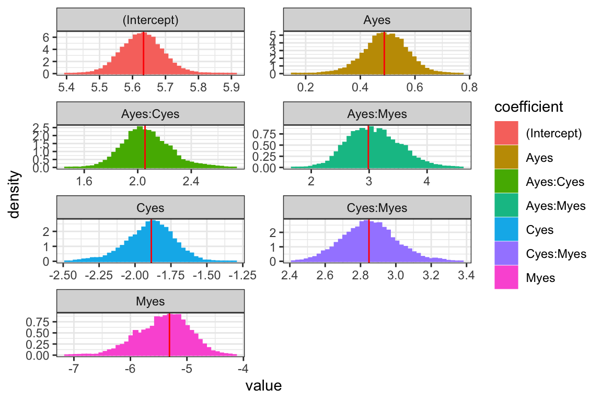

hmclearn: Poisson Regression Example
Samuel Thomas
2020-05-21
poisson_regression_hmclearn.RmdIntroduction
This vignette demonstrates fitting a Poisson regression model via Hamiltonian Monte Carlo (HMC) using the hmclearn package.
library(hmclearn)
GLM - Poisson Regression
For a count response, we let
\[ p(y; \mu) = \frac{e^{-\mu}\mu^y}{y!} \]
with a log-link function
\[ \begin{aligned} \mu &:= E(Y | x) = e^{X\beta} \\ \log \mu &= X\beta. \end{aligned} \]
Next, we develop the likelihood
\[ \begin{aligned} L(\mu; y) &= \prod_{i=1}^n \frac{e^{-\mu_i}\mu_i^{y_i}}{y_i!} \\ L(\beta; y, X) &= \prod_{i=1}^n \frac{e^{-e^{X_i\beta}}e^{y_iX_i\beta}}{y_i!} \\ \end{aligned} \]
with log-likelihood
\[ \begin{aligned} l(\beta; y, X) &= \sum_{i=1}^n -e^{X_i\beta} + y_i X_i \beta - \log y_i! \\ &\propto \sum_{i=1}^n -e^{X_i\beta} + y_i X_i \beta. \end{aligned} \]
We set a multivariate Normal prior for \(\beta\)
\[ \begin{aligned} \beta &\sim N(0, \Sigma_\beta) \\ &\sim N(0, \sigma_\beta^2I) \end{aligned} \]
with pdf
\[ \begin{aligned} p(\beta) &= \frac{1}{\sqrt{\lvert 2\pi \Sigma_\beta \rvert }}e^{-\frac{1}{2}\beta^T \Sigma_\beta^{-1}\beta} \\ \log p(\beta) &= -\frac{1}{2}\log(2\pi \lvert \Sigma_\beta \rvert) - \frac{1}{2}\beta^T \Sigma_\beta^{-1} \beta \\ &\propto -\frac{1}{2}\log \lvert\Sigma_\beta\rvert - \frac{1}{2}\beta^T \Sigma_\beta^{-1} \beta. \end{aligned} \]
Let \(B = 1e3\) for instance, as a relatively uninformative prior.
Next, we derive the log posterior. The log posterior is the sum of the log likelihood and the log of the prior for \(\beta\).
\[ \begin{aligned} p(\beta | X, y) &\propto p(y | X, \beta) p(\beta) \\ \log p(\beta | X, y) & \propto \log p(y | X, \beta) + \log p(\beta) \\ &\propto \sum_{i=1}^n \left( -e^{X_i\beta} + y_i X_i \beta\right) -\frac{1}{2}\log \lvert\Sigma_\beta\rvert - \frac{1}{2}\beta^T \Sigma_\beta^{-1} \beta \\ &\propto \sum_{i=1}^n \left( -e^{X_i\beta} + y_i X_i \beta\right) - \frac{1}{2}\beta^T \Sigma_\beta^{-1} \beta \end{aligned} \]
We need to derive the gradient of the log posterior for the leapfrog function in HMC.
\[ \begin{aligned} \log p(\beta | X, y) & \propto \log p(y | X, \beta) + \log p(\beta) \\ &\propto \sum_{i=1}^n \left( -e^{X_i\beta} + y_i X_i \beta\right) - \frac{1}{2}\beta^T \Sigma_\beta^{-1} \beta \\ \frac{\partial}{\partial \beta}\log p(\beta|X, y) &\propto \sum_{i=1}^n\left( -e^{X_i\beta}X_i + y_iX_i\right) - \Sigma_\beta^{-1} \beta \end{aligned} \]
Poisson Regression Example Data
The user must define provide the design matrix directly for use in hmclearn. Our first step is to load the data and store the design matrix \(X\) and dependent variable vector \(y\).
We load drug usage data and create the design matrix \(X\) and dependent vector \(y\). This example also appears in Agresti (2015), and we compare results to his.
data(Drugs) # design matrix X <- model.matrix(count ~ A + C + M + A:C + A:M + C:M , data=Drugs) X <- X[, 1:ncol(X)] # independent variable is count data y <- Drugs$count
To compare results, we first fit a standard linear model using the frequentist function glm.
# matrix representation f <- glm(y ~ X-1, family=poisson(link=log)) summary(f) #> #> Call: #> glm(formula = y ~ X - 1, family = poisson(link = log)) #> #> Deviance Residuals: #> 1 2 3 4 5 6 7 8 #> 0.02044 -0.02658 -0.09256 0.02890 -0.33428 0.09452 0.49134 -0.03690 #> #> Coefficients: #> Estimate Std. Error z value Pr(>|z|) #> X(Intercept) 5.63342 0.05970 94.361 < 2e-16 *** #> XAyes 0.48772 0.07577 6.437 1.22e-10 *** #> XCyes -1.88667 0.16270 -11.596 < 2e-16 *** #> XMyes -5.30904 0.47520 -11.172 < 2e-16 *** #> XAyes:Cyes 2.05453 0.17406 11.803 < 2e-16 *** #> XAyes:Myes 2.98601 0.46468 6.426 1.31e-10 *** #> XCyes:Myes 2.84789 0.16384 17.382 < 2e-16 *** #> --- #> Signif. codes: 0 '***' 0.001 '**' 0.01 '*' 0.05 '.' 0.1 ' ' 1 #> #> (Dispersion parameter for poisson family taken to be 1) #> #> Null deviance: 2.4038e+04 on 8 degrees of freedom #> Residual deviance: 3.7399e-01 on 1 degrees of freedom #> AIC: 63.417 #> #> Number of Fisher Scoring iterations: 4
HMC poisson regression
Run HMC for poisson regression model
N <- 1e4 eps_vals <- c(rep(5e-4, 2), 1e-3, 2e-3, 1e-3, 2e-3, 5e-4) set.seed(412) t1.hmc <- Sys.time() f_hmc <- hmc(N = N, theta.init = rep(0, 7), epsilon = eps_vals, L = 50, logPOSTERIOR = poisson_posterior, glogPOSTERIOR = g_poisson_posterior, varnames = colnames(X), parallel=TRUE, chains=2, param=list(y=y, X=X)) t2.hmc <- Sys.time() t2.hmc - t1.hmc #> Time difference of 38.62555 secs
The acceptance ratio for each of the HMC chains is sufficiently high for an efficient simulation.
f_hmc$accept/N #> [1] 0.9810 0.9811
The posterior quantiles are summarized after removing an initial burnin period.
summary(f_hmc, burnin=3000) #> Summary of MCMC simulation #> 5% 25% 50% 75% 95% rhat #> (Intercept) 5.5394391 5.5977043 5.6387278 5.6798977 5.7358632 1.000154 #> Ayes 0.3563402 0.4303017 0.4803553 0.5320619 0.6095152 1.000700 #> Cyes -2.1747310 -2.0131601 -1.9088726 -1.8015604 -1.6597244 1.005143 #> Myes -6.2393485 -5.7493983 -5.4059908 -5.0751727 -4.6376344 1.038450 #> Ayes:Cyes 1.8123264 1.9642536 2.0739269 2.1897576 2.3590079 1.007786 #> Ayes:Myes 2.3131814 2.7308892 3.0644612 3.3724022 3.8806165 1.024469 #> Cyes:Myes 2.5757179 2.7633852 2.8773648 3.0099270 3.1616220 1.020738
Trace plots provide a visual indication of stationarity. These plots indicate that the MCMC chains are reasonably stationary.
mcmc_trace(f_hmc, burnin=3000)

Histograms of the posterior distribution show that Bayesian parameter estimates align with Frequentist estimates.
